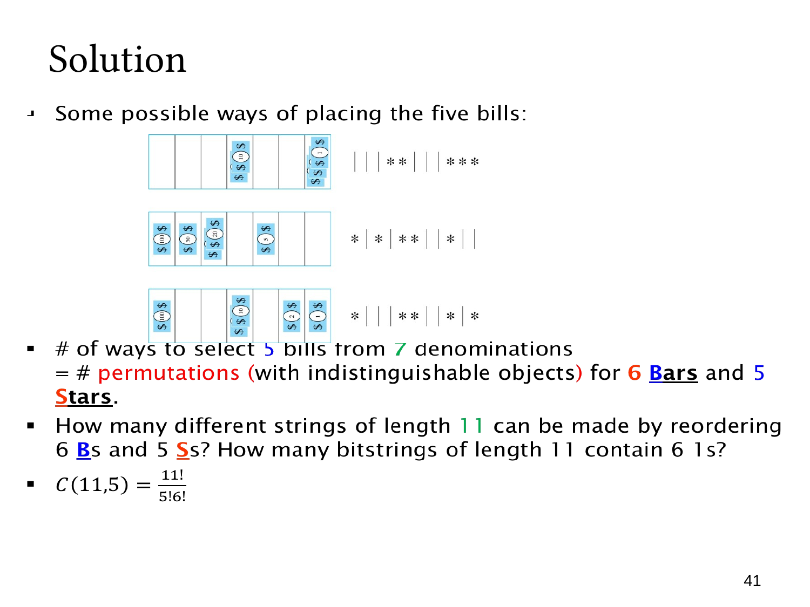

L1.6 · 第 41 页讲解原文
查看这一页课件

用星号和隔板表示每种面额的张数
七格钱箱的面额顺序固定。一个星号表示一张纸币，六条隔板把七种面额分开。五个星号加六条隔板，一共写 11 个符号。
图中的三个例子分别是：
- (0,0,0,2,0,0,3) 写成「||||||*」。
- (1,1,2,0,1,0,0) 写成「||**||*||」。
- (1,0,0,2,0,1,1) 写成「|||**|||*」。
两条隔板相邻，表示中间那种面额没选。开头或结尾有隔板，表示第一种或最后一种没选。钱箱两侧的外框不用写，只写七格之间的六条隔板。
五个星号相同，六条隔板也相同，所以排列数为
5!6!11!=C(11,5)=462.
也可以选六个位置放隔板，得到 C(11,6)。两个答案相同，正好体现组合数的对称性。
把隔板换成 1、星号换成 0，就得到长度为 11、恰好有六个 1 的位串。反过来，数出七段各有几个星号，就能知道每种面额选了几张。因此，每种选法与一种星号隔板排列一一对应，不只是画图示意。
对照原始讲解
星与隔板：将数量向量编码为字符串
图中的七格钱箱按面额固定排序。用一个星号表示一张纸币，用六条内部隔板分开七种面额，便将选择编码为长度 11 的字符串。
三个图示的张数向量分别为：
- (0,0,0,2,0,0,3)，编码为「||||||*」。
- (1,1,2,0,1,0,0)，编码为「||**||*||」。
- (1,0,0,2,0,1,1)，编码为「|||**|||*」。
相邻隔板表示中间面额没有纸币；开头或结尾的隔板表示第一类或最后一类数量为零。两侧外边框不用另写隔板，只需要七类之间的六条界限。
五个星号相同，六个隔板也相同，因此编码数量为
5!6!11!=C(11,5)=462.
也可以选六个隔板位置，得到 C(11,6)，与组合数对称性一致。
将隔板记为 1、星号记为 0，就对应长度 11 且恰含六个 1 的位串。每个编码都能通过数七段星号唯一恢复各面额张数，故这是一一对应，而非只是一种示意画法。